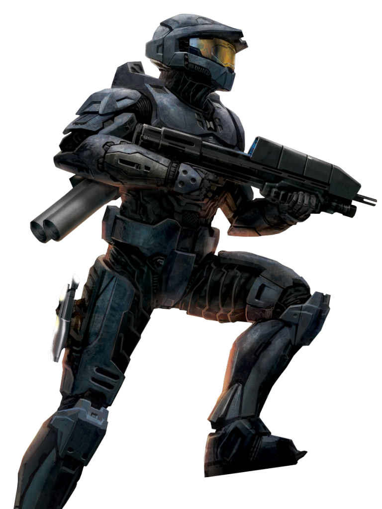
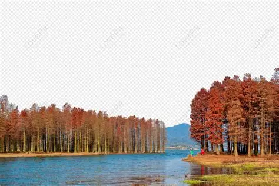

Uno de mis juegos favoritos es halo reach que cumple 15 años desde su salida
Los paisajes
Ver paisajes es una de las cosas que más me gusta ver no importa si es ficticio, me encanta verlos y me relajan.
Mis amigos
Mis amigos son muy importantes, me fascina pasar tiempo con ellos y hacer actividades juntos. A lo largo de mi vida he conocido
muchas personas pero pocas son las que han cambiado mi forma de ver las cosas, gracias a ellos puedo ver mi vida con otros ojos. GRACIAS.
Tabla de mis gustos
| Cosas que me gustan | Cosas que no me gustan |
|---|---|
| Los videojuegos | El ajo |
| Películas de Transformers | La calor |
| El frío | Animales abandonados |
| La música | Ver gente triste |